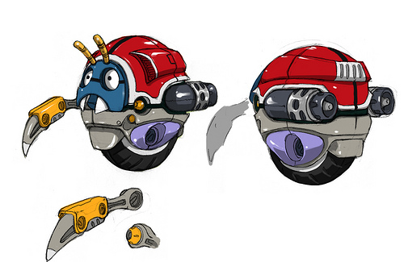

官方網誌釋出第二回Project Needlemouse公布情報的活動！
這次讓粉絲們挑戰的內容是：投稿自己畫的早期時代敵人的設定稿給SEGA，累計100張後才公佈獎賞。
如果挑戰已達到，獎賞下週公佈：１）Project Needlemouse的正式名稱、２）第個一關卡(Zone)的設定稿、３）很酷的額外獎賞資訊
[SEGA網誌訊息](註:這篇網誌內的第一張設定稿是同人示範, 第二張才是官方)先公佈官方設定稿第二張:

附件: 4309916425_bd4308916d.jpg
來自最初的Green Hill Zone
接下來這週給粉絲們投稿敵人設定稿囉~
SEGA在圖片註解藏了一段話
\"The fact that you\re actually looking in the comments section of this image speaks volumes - and that\s a good thing. So here\s an extra crumb for you to follow: February is going to be a very good month.\
【透漏一點內容：二月會是個好月份】
下週就是二月了 XD
二月初也, 就是這個活動公布情報時間
至於二月中會有其他的什麼情報呢,拭目以待吧!', '61.71.136.1', 0, 0, 1, 0, -1, -1, 0, 0, 0, 0, 0
這次還真夠厲害了…
不是問答而是一百張畫…
但人家不會畫畫啊…請誰去畫啊啊啊！！（喂喂）
活動已在短短48小時內達成，粉絲們仍可以繼續投稿。
這週將是刺蝟週，從星期二(國外時間)開始。內容有免費禮物、畫作競賽、以及
公布重要資訊(這點見一樓)。
順帶一題, 官方也回應那些網路謠言：Project Needlemouse不是HD版的Sonic1。
[
網誌訊息]
(網誌中的圖是一些不錯的粉絲畫作)
接下來的資訊會另開新主題 [:baozi24:]
[i=s] 本文章最後由 s3062072 於 2010/2/1 06:29 PM 編輯 [/i]
未來的Metal Sonic入選（理所當然吧）！
不過沒能被評有些可惜。
這裡面還有沒有能被我們認出的畫啊？
很期待本週的情報啊…
--
剛才未來說：那不是她的畫…（我居然連簽名都看錯）